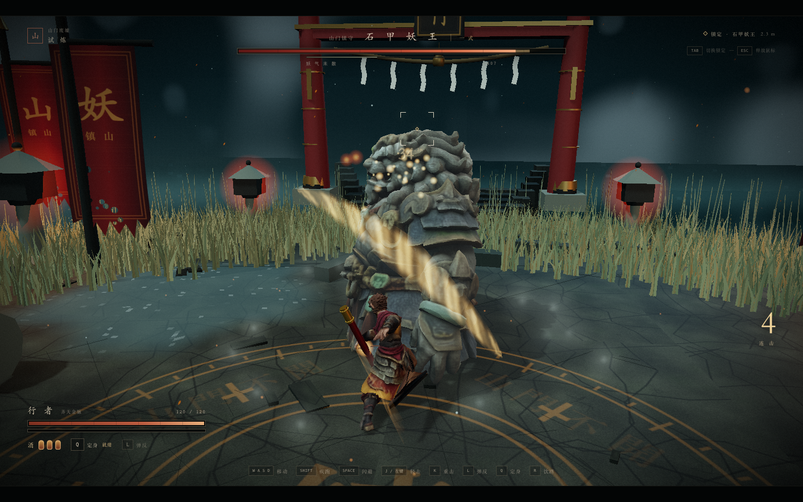
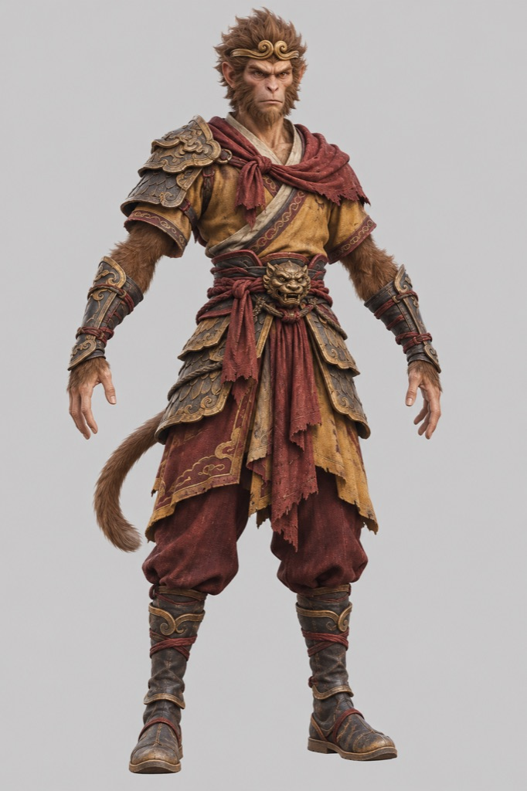
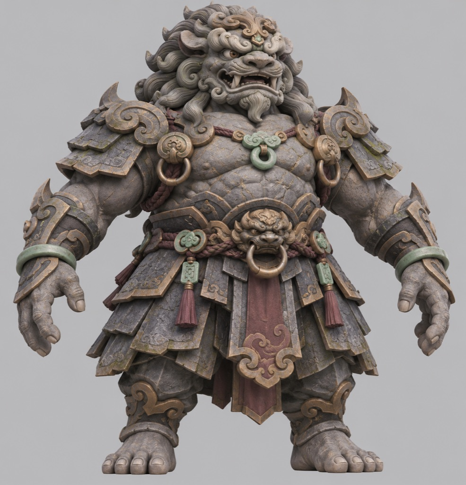

妖王试棍
一场西游主题的 3D Boss 战，让玩家挥动金箍棒，在山门废墟中迎战石甲妖王。
这是一个面向国风神话与动作游戏爱好者的桌面浏览器游戏原型。行者与妖王由 Aholo Lux3D 生成，并被带入可交互的战斗场景。

01 / 作品概述
在一场对决中体验西游意境
玩家操控手持金箍棒的行者，观察妖王的攻击前摇，选择闪避、弹反或施展定身，再寻找机会接近并攻击。战斗以胜利或失败结算，结束后可再次挑战。
作品聚焦一场完整的单人 Boss 战，将 AI 生成的角色资产用于实际交互体验。
核心体验
观察蓄力 → 闪避或弹反 → 近身攻击 → 胜负结算 → 再次挑战
02 / AI 创作流程
从角色概念图到三维战斗
先设计猴形行者与石甲山妖的角色概念图，再使用 Lux3D 将概念图转为三维资产，最终导入游戏场景。


01 角色设计
使用图像生成工具制作角色概念图，确定行者与妖王的造型。
02 Lux3D 生成
概念图经 Lux3D 图生 3D；行者进一步完成自动绑骨和动作重定向。
03 游戏集成
使用 three.js 加载模型，结合战斗逻辑、镜头、程序化场景、金箍棒和音效。
03 / 交互体验
操作与战斗机制
战斗包含轻重攻击、闪避、弹反、锁定、定身和回血。妖王有攻击预警、不同招式和阶段变化；玩家可观察时机并选择应对方式。
W A S D 移动 / Shift 疾跑
J / 鼠标左键 轻击 / K 重击
空格 闪避 / L 弹反
Q 定身 / R 回血 / Tab 锁定
04 / 技术与边界
技术组成与当前限制
技术组成
- Aholo Lux3D：生成行者与妖王模型，行者经过绑骨与动作重定向。
- three.js 与 Vite：浏览器端模型加载、渲染和运行。
- 游戏开发：战斗状态机、妖王行为、程序化场景、金箍棒、特效与 WebAudio 合成音效。
当前限制
- 妖王是静态网格，攻击通过整体位移、旋转和特效表达。
- 行者使用重定向动作，挥棍姿态和握持仍有优化空间。
- 命中判定为手工设定，生成几何不直接决定攻击判定。
- 主要面向桌面键鼠，尚无移动端虚拟摇杆；低配置设备尚未全面验证。